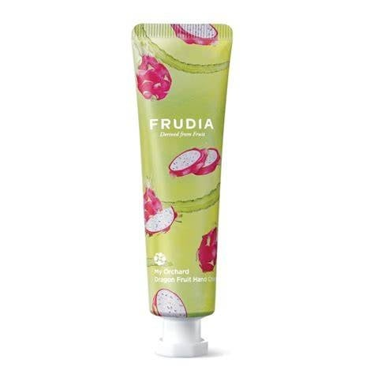
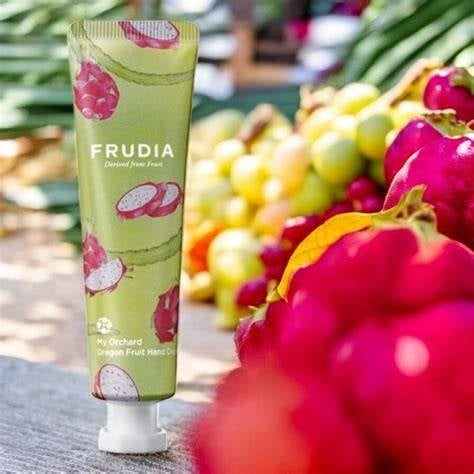
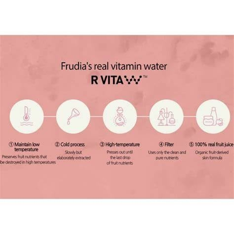

<div> <table style="border-collapse: collapse; width: 99.9809%;" border="1"><colgroup><col style="width: 49.9522%;"><col style="width: 49.9522%;"></colgroup> <tbody> <tr> <td> <div><span style="font-size: 14pt;"><strong>Frudia My Orchard Crema de maini cu fructul dragonului, 30g</strong></span></div> <div><span style="font-size: 14pt;">Crema de m&acirc;ini Frudia My Orchard Dragon Fruit aduce energia fructelor tropicale direct &icirc;n rutina ta de &icirc;ngrijire. &Icirc;mpachetată &icirc;ntr-un tub practic și colorat, această cremă intens hidratantă folosește extract pur de fructul dragonului pentru a hrăni pielea &icirc;n profunzime, lăs&acirc;nd un parfum exotic absolut irezistibil.</span></div> </td> <td></td> </tr> <tr> <td></td> <td><span style="font-size: 14pt;">O adevărată terapie cu fructe pentru m&acirc;ini catifelate, inspirată din natură. Textura sa cremoasă pătrunde rapid &icirc;n piele, infuz&acirc;nd-o cu antioxidanții puternici din fructul dragonului. Este aliatul perfect de e-commerce pentru oricine &icirc;și dorește o barieră de protecție eficientă, un miros proaspăt și o senzație de prospețime.</span></td> </tr> <tr> <td><span style="font-size: 14pt;">Secretul eficienței Frudia constă &icirc;n tehnologia patentată R VITA W. Acest proces unic de extracție la rece păstrează intacte vitaminele și nutrienții din fructe, fără distrugere termică. Filtrată riguros, formula oferă pielii tale un suc de fructe 100% real pentru o terapie naturală ultra-hrănitoare.</span></td> <td style="text-align: center;"></td> </tr> <tr> <td></td> <td><span style="font-size: 14pt;">O cremă terapeutică suculentă concepută pentru trei nevoi majore: salvează m&acirc;inile extrem de uscate și aspre, repară pielea afectată de muncă fizică, apă sau detergenți și &icirc;mbunătățește elasticitatea pielii ridate. Tratamentul ideal care redă instantaneu finețea și aspectul t&acirc;năr al m&acirc;inilor delicate.</span></td> </tr> </tbody> </table> </div>